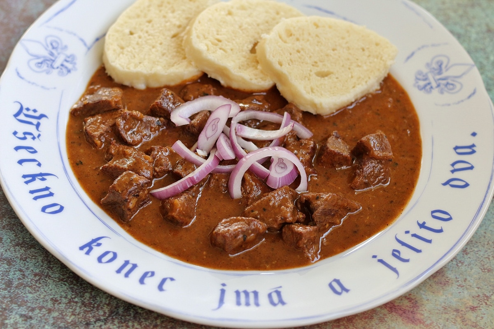

Czech Goulash

Description:
Hovězí guláš (beef stew or goulash) is certainly one of the famous Czech foods everybody should try when visiting the Czech Republic. Slow simmered and done right, this goulash is characterized by rich, hearty color, aromatic flavor, and insanely delicious taste.
Ingredients:
- Boneless beef chuck or beef shank; well-marbled, cut into 1-inch pieces
- Yellow onion; coarsely chopped, you will need as much onion as the beef weighs
- Pork lard
- Caraway seeds; crushed or ground
- Salt
- Pepper; ground
- Sweet paprika; ground
- Tomato paste; do not use tomato passata or ketchup
- Bay leaves
- Water; or beef broth for a richer flavor
- Dried marjoram
Steps:
- Peel the onion and chop it roughly. Cut the beef into 1-inch pieces.
- In a pot with a thick bottom (I use heavy iron cast dutch oven), melt the lard over higher heat. Fry onion until almost brown. Stir frequently to avoid burning.
- Add beef chunks and fry them from all sides until a brown crust is created. Stir frequently, reduce heat if necessary. Turn the stove on medium heat, add caraway seeds, salt, ground pepper, sweet paprika, and tomato paste. Fry for 2 minutes while stirring. The base can’t get burnt, else guláš will taste bitter. Add 1-2 spoons of water to prevent burning.
- Pour in water, so the meat is almost covered. Add bay leaves. Bring to a boil, reduce the heat to a minimum, cover with a lid and allow the beef to simmer for 1,5-2 hours or until soft.
- Add some water when the level of liquid in the pot falls. When the guláš contains too much water, cook it uncovered at the end. The liquid will be reduced, and guláš gains richer flavor and nice red color. Stir occasionally.
- When the beef is soft, remove bay leaves, add dried marjoram, stir. Season with salt to your liking. Cover with a lid and set it aside for 10 minutes.